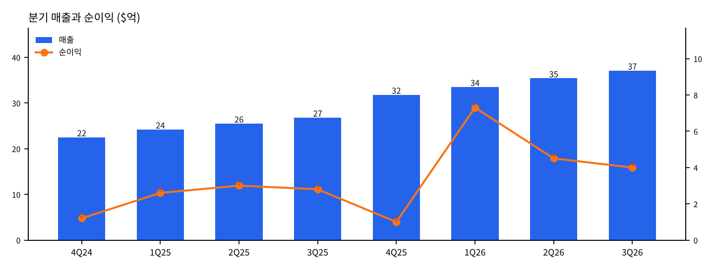
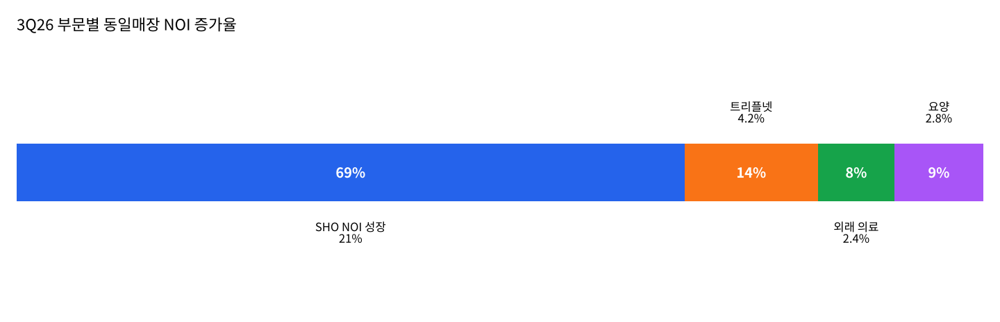
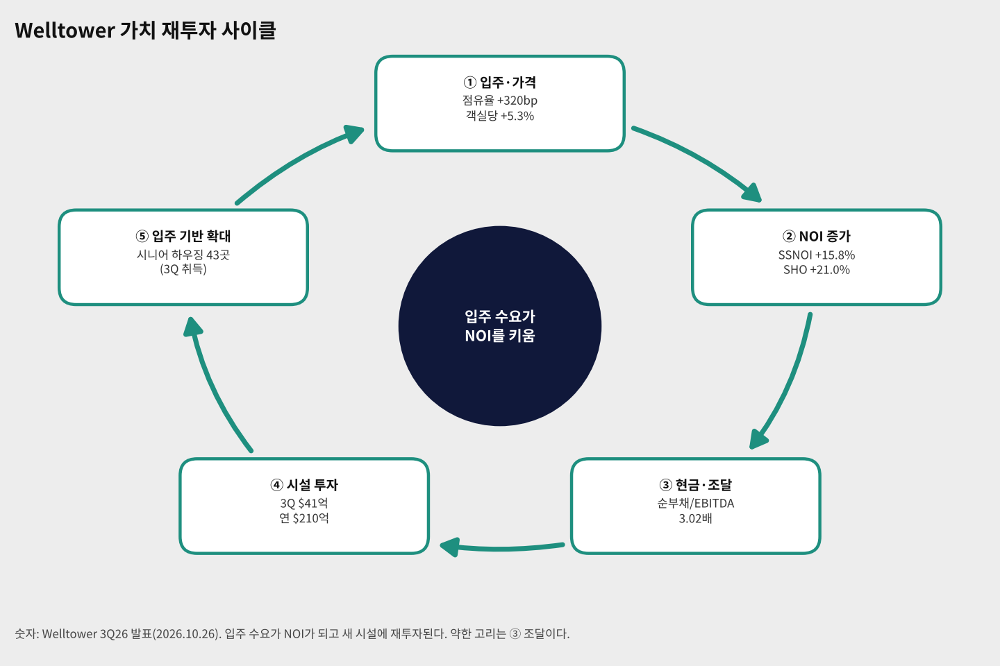

Welltower는 시설을 소유하고 운영사에 맡겨 임대·운영 수익을 얻는다. 점유율과 객실 가격이 오를수록 NOI가 빠르게 늘어난다.
| 항목 | 내용 |
|---|---|
| 종목 | Welltower (WELL) · NYSE · 부동산(헬스케어 리츠) · 오하이오 톨리도 |
| 최근 분기(3Q26) | 정규화 FFO $1.67/주, 매출 $37.2억 |
| 핵심 사업 | 시니어 하우징 운영(SHO), 외래 의료, 요양 |
| 직원 수 | 약 712명(트레이딩뷰) |
| 멀티플 | PER·PEG는 REIT 특성상 참고용, 08~10 표 참조 |
| 직책 | 인물 | 역할·특징 |
|---|---|---|
| CEO | 샨크 미트라(Shankh Mitra) | (확인 필요) |
| CFO | 팀 맥휴(Tim McHugh) | (확인 필요) |
경영 스타일: 자본 순환. 자산을 팔고 더 수익성 높은 시니어 하우징을 사들이는 방식이다.
운영사와 점유율·가격 데이터를 공유해 시설별 성과를 관리한다(회사 설명, 확인 필요).
연간 $210억 투자 계약으로 시니어 하우징 비중을 키운다.
다음 실적발표는 세 가지 질문에 답하는 자리다.
1. 점유율과 가격이 계속 오르나?
2. $210억 투자가 가이던스대로 종결되나?
3. 조달 비용이 감당되나?
한 줄 판정 규칙: 첫 질문(점유율·가격)이 이어지면 약한 고리(③ 조달 비용)가 풀린다.
일정: 4Q26 실적 발표는 트레이딩뷰 기준 2027.02.16(확인 필요).
| 분기 | 매출 | 순이익 | EPS | 조정 EPS | 특이 사항 |
|---|---|---|---|---|---|
| 4Q24 | $22.5억 | $1.2억 | 0.18 | 0.19 | |
| 1Q25 | $24.2억 | $2.6억 | 0.32 | 0.40 | |
| 2Q25 | $25.5억 | $3.0억 | 0.43 | 0.45 | |
| 3Q25 | $26.8억 | $2.8억 | 0.40 | 0.41 | |
| 4Q25 | $31.8억 | $1.0억 | -1.86 | 0.14 | |
| 1Q26 | $33.5억 | $7.3억 | 0.42 | 1.02 | |
| 2Q26 | $35.4억 | $4.5억 | 0.48 | 0.61 | |
| 3Q26 | $37.1억 | $4.0억 | 0.54 | 0.54 | 정규화 FFO $1.67/주 |
REIT는 EPS보다 FFO를 보는 것이 일반적이다. 3Q26 GAAP EPS는 회사 발표값 $0.54로 대체했고, 앞선 분기 EPS는 트레이딩뷰 값이라 회사 발표와 다를 수 있다. 4Q25 EPS의 음수는 트레이딩뷰 값이다(원인 확인 필요). 매출·순이익·EPS(GAAP 희석)는 트레이딩뷰 스캐너, 조정 EPS는 트레이딩뷰 실적 페이지의 Reported 값이다. 분기 정렬은 오래된 분기→최신이다.

흐름 요약: 최근 분기 매출은 $37.1억로 전년 동기 $26.8억 대비 +38.4%, 순이익은 $4.0억(전년 $2.8억)다. 최근 4분기 GAAP EPS는 $-0.42, 조정 EPS는 $2.31다.
| 항목 | 내용 | 3Q26 지표 | 비고 |
|---|---|---|---|
| SHO(시니어 하우징 운영) | 핵심 성장 사업 | SSNOI +21.0% | 동일매장 매출 +9.1% |
| 시니어 하우징 트리플넷 | 임대형 | SSNOI +4.2% | |
| 외래 의료 | 병원 인접 시설 | SSNOI +2.4% | |
| 요양 | 장기 요양 시설 | SSNOI +2.8% |

NOI 성장은 SHO가 압도적으로 높다. 전체 동일매장 NOI(+15.8%)는 SHO가 끌어올린 값이다.
Welltower는 고령자가 건강하게 지낼 시설을 소유·확대해 안정적인 임대·운영 수익을 얻는 것을 목표로 한다.
| 축 | 내용 |
|---|---|
| 수요 | 고령 인구·점유율 +320bp |
| 투자 | 연 $210억 계약 |
| 자본 | 순부채/EBITDA 3.02배 |

| 이동평균 | 값 | 종가 대비 | 위치 |
|---|---|---|---|
| 5일선 | $245.41 | +0.7% | 종가 위 |
| 20일선 | $241.25 | +2.5% | 종가 위 |
| 50일선 | $235.10 | +5.2% | 종가 위 |
| 100일선 | $236.29 | +4.6% | 종가 위 |
| 200일선 | $222.33 | +11.2% | 종가 위 |
52주 고가 $255.20(2026-07-28)·저가 $181.47(2026-02-03) 범위에서 종가 $247.25는 5일선, 20일선, 50일선, 100일선, 200일선을 웃돌고.
| 규칙 | 기준 | 현재 값 | 신호 |
|---|---|---|---|
| 장기 추세 필터 | 종가 vs 200일선 | $247.25 > $222.33 | 매수 |
| 중장기 교차 | 50일선 vs 200일선 | $235.10 > $222.33 | 매수 |
| 단기 교차 | 20일선 vs 50일선 | $241.25 > $235.10 | 매수 |
| 돈키언 채널 | 55일 고가 $249.75 / 저가 $217.72 | 중간값 $233.74 위 | 매수 |
| 1개월 모멘텀 | 21거래일 수익률 | +3.9% (기준 $238.08) | 매수 |
| 3개월 모멘텀 | 63거래일 수익률 | +4.1% (기준 $237.40) | 매수 |
| 6개월 모멘텀 | 126거래일 수익률 | +13.1% (기준 $218.61) | 매수 |
| 12개월 모멘텀 | 252거래일 수익률 | +25.3% (기준 $197.27) | 매수 |
| 종합 (8개 평균) | +1.00 | 강한 매수 |
해석: 매수 신호 8개(장기 추세 필터, 중장기 교차, 단기 교차, 돈키언 채널, 1개월 모멘텀, 3개월 모멘텀, 6개월 모멘텀, 12개월 모멘텀), 매도 신호 0개(없음). CTA 점수 +1.00(강한 매수). 14일 ATR $4.97 (2.0%), 52주 고가 $255.20 · 저가 $181.47.
| 가격 | 기준 | 무엇이 바뀌나 |
|---|---|---|
| $249.75 | 55일 고가 | 돌파 시 채널 상단 갱신 |
| $238.08 | 1개월 모멘텀 기준가 | 종가가 이 가격 위면 1개월 신호 매수 |
| $237.40 | 3개월 모멘텀 기준가 | 종가가 이 가격 위면 3개월 신호 매수 |
| $233.74 | 돈키언 중간값 | 55일 채널 중간값 위/아래로 신호가 바뀜 |
| $222.33 | 200일선 | 종가가 이 선 위/아래인지로 장기 추세 신호가 바뀜 |
| $218.61 | 6개월 모멘텀 기준가 | 종가가 이 가격 위면 6개월 신호 매수 |
| $217.72 | 55일 저가 | 이탈 시 채널 하단 갱신 |
| $197.27 | 12개월 모멘텀 기준가 | 종가가 이 가격 위면 12개월 신호 매수 |
가격 수준은 신호가 바뀌는 기준선일 뿐 진입·청산 가격 제안이 아니다. 20일/50일 교차는 이동평균 자체가 움직여 단일 가격으로 표시하지 않았다. 일봉·주봉은 종가 기준 직접 계산(고저 데이터 미사용)이다.
| 악재 요인 | 내용 | 강도 |
|---|---|---|
| 금리·조달 | 투자 규모가 커 조달 비용에 민감하다 | 중간 |
| 성장 둔화 | 점유율 상승폭이 줄면 NOI 증가율이 낮아진다 | 중간 |
| 데이터 불일치 | 트레이딩뷰 EPS와 회사 FFO가 달라 EPS 기반 배수는 참고용 | 참고 |
| 티커 | 회사 | PER(TTM) | PEG | P/S | EPS 성장(YoY) |
|---|---|---|---|---|---|
| WELL | Welltower | – | – | 13.16배 | – |
| VTR | Ventas | 166.8배 | – | 6.73배 | +0% |
| O | Realty Income | 40.2배 | 1.13 | 8.82배 | +35% |
| PLD | Prologis | 27.6배 | 0.87 | 12.99배 | +32% |
비교 결론: Welltower의 PER은 Realty Income·Prologis보다 높거나 산출이 어렵다. REIT는 PER 대신 FFO 배수가 일반적이라 이 표는 참고용이다.
리츠는 부채로 자산을 늘리므로 현금·부채·레버리지를 함께 본다.
| 지표 | 값 | 출처 | 해석 |
|---|---|---|---|
| 현금·단기투자 | $24억 | 트레이딩뷰 스캐너(최근 분기) | |
| 총부채 | $212억 | 트레이딩뷰 스캐너(최근 분기) | |
| 순부채(부채−현금) | $188억 | 내 계산 | 현금 대비 부채 부담 |
| 잉여현금흐름(TTM) | $24억 | 트레이딩뷰 스캐너 | |
| TTM 매출 | $138억 | 트레이딩뷰 스캐너 |
| 기준 | 매출 | P/S | 비고 |
|---|---|---|---|
| 내 계산(종가 ÷ 최근 4분기 매출 합계) | $137.8억 | 13.16배 | 시총은 정렬용 데이터에서만 사용 |
| 동종(트레이딩뷰) | – | VTR 6.73배 · O 8.82배 · PLD 12.99배 | 11.19 |
해석: 트레이딩뷰 총부채는 $212억이고 회사 설명 기준 순부채/조정 EBITDA는 3.02배다.
EBITDA는 영업활동의 현금 창출력을 보는 지표이고, PEG는 PER을 EPS 성장률로 나눈 값이다. EBITDA·FCF는 트레이딩뷰 TTM 값이다.
| 지표 | 값 | 산출 |
|---|---|---|
| EBITDA(TTM) | $36억 | 트레이딩뷰 스캐너 |
| EBITDA 마진 | 26.1% | EBITDA ÷ TTM 매출(내 계산) |
| FCF 마진 | 17.4% | FCF ÷ TTM 매출(내 계산) |
| PER(GAAP TTM) | – | $247.25 ÷ $-0.42 |
| PER(조정 TTM) | 107.0배 | $247.25 ÷ $2.31 |
| 방식 | PER | EPS 성장률 | PEG | 판정 |
|---|---|---|---|---|
| GAAP EPS (TTM $-0.42) | – | – | 산출 불가 | 참고 |
| 조정 EPS (TTM $2.31) | 107.0배 | +59% ($1.45 → $2.31) | 1.80 | 기준 초과 |
판정: PEG 산출 불가(TTM EPS가 음수이거나 전년 기저가 음수) PEG 기준은 1.0 이하 투자 적격, 0.5 이하 적극 매수다. EPS 성장률은 최근 4분기 EPS 합계를 직전 4분기 합계와 비교한 값(내 계산)이고, 일회성 항목이 있으면 조정 EPS 행을 함께 본다.

Welltower의 사이클: 입주 수요가 NOI를 키우고 그 현금과 조달로 새 시설을 사서 다시 입주 기반을 넓힌다.
| 고리 | 현재 숫자·근거 |
|---|---|
| ① 입주·가격 | SHO 점유율 +320bp · 객실당 매출 +5.3% |
| ② NOI 증가 | 전체 SSNOI +15.8% · SHO +21.0% |
| ③ 현금·조달 | 순부채/조정 EBITDA 3.02배 · 유동성 약 $95억 |
| ④ 시설 투자 | 3Q 총투자 $41억 · 연간 클로징·계약 $210억 |
| ⑤ 입주 기반 확대 | 3Q 취득 43개 시설 |
사이클의 특징: 약한 고리는 ③ 조달이다(금리에 민감하다). "(내 해석)"은 보고서 수치가 아닌 해석이다.